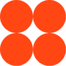
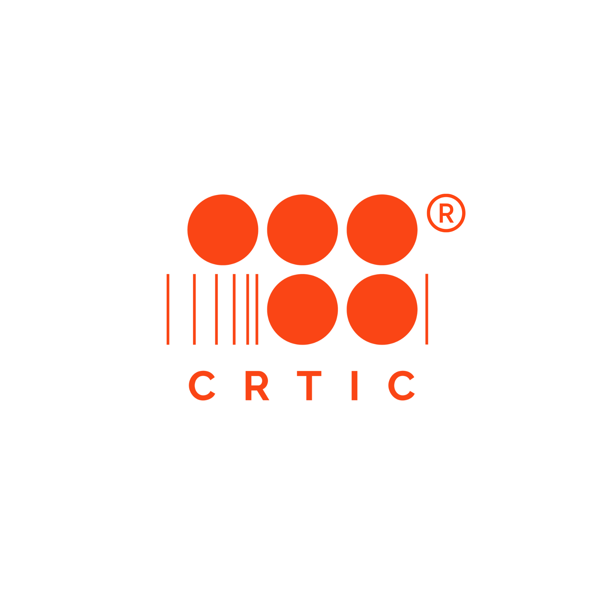

Una fórmula modular de experiencia inmersiva que fusiona música clásica de cámara con tecnología generativa. El territorio como mensaje. La arquitectura sensorial como contenedor.
Leonardo da Vinci intentó resolver el problema geométrico de construir un cuadrado con el mismo área que un círculo. Nunca lo logró. Pero en el intento, produjo el Hombre de Vitruvio: la imagen perfecta de la tensión entre lo espiritual y lo técnico.
CRTIC × CNC no resuelve ese dilema. Lo convierte en experiencia.
El círculo es la música clásica de cámara: atemporal, orgánica, humana. El cuadrado es la tecnología generativa: precisa, escalable, portátil. La experiencia existe en la intersección irresolvible entre los dos.
"No estamos diseñando un concierto. Estamos diseñando una plataforma de Environmental Storytelling escalable."

La hipótesis central no es artística ni tecnológica. Es arquitectónica: diseñar un sistema sensorial donde el impacto emocional sea constante e independiente del contenido.
Valdivia puede ser reemplazada por la Patagonia, por el Atacama, por los Andes. La emoción de "habitar otro lugar" permanece.
"Independientemente de que el territorio cambie, el efecto emocional de habitar otro lugar debe permanecer constante."
El principio de diseño de "transportar un territorio" permite que Valdivia, con sus ríos, bosques y humedad, habite centros urbanos globales: Santiago, Nueva York, Berlín.
No viajamos a Valdivia. Valdivia viaja a nosotros.
Sesión de captura multicanal con la Orquesta Filarmónica de Valdivia. 30 músicos. 4 horas de grabación. El núcleo sonoro de Valdivia Nómade.

CRTIC aporta el contenedor: la infraestructura tecnológica, el equipo técnico, la metodología de transferencia y la arquitectura escalable del sistema inmersivo. El cuadrado.
CNC aporta el mensaje: la Filarmónica de Valdivia, la dirección artística, la identidad territorial y la convicción de que la música clásica puede habitar cualquier espacio. El círculo.